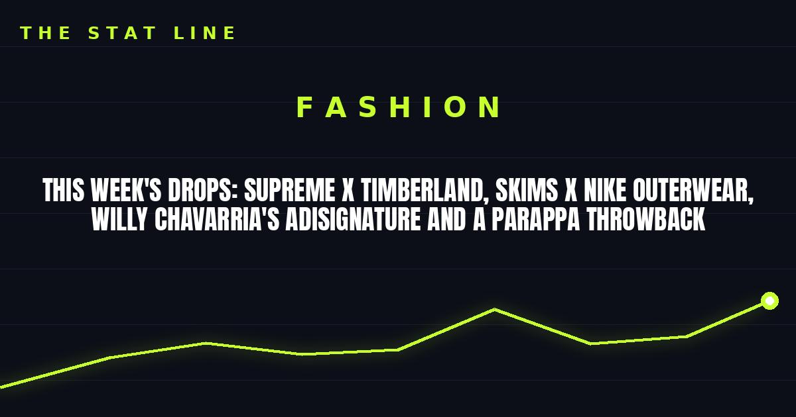

This Week's Drops: Supreme x Timberland, SKIMS x Nike Outerwear, Willy Chavarria's adiSignature and a PaRappa Throwback
Hypebeast's drop roundup is stacked: Supreme's Timberland Field Boot hits Asia today, SKIMS and Nike debut outerwear together, Willy Chavarria's adidas line lands Sunday, and Technics x PaRappa x WIND AND SEA drops at Shibuya PARCO.

Another stacked week on the drop calendar. Here's the best of Hypebeast's weekly roundup — skipping the two we already covered here (Palace Winter Drop 4 and Patta x Carhartt WIP) and going straight to what's new.
Supreme x Timberland Fall 2026
Supreme reunited with Timberland for a rugged Fall 2026 collection anchored by a reimagined Field Boot — premium waterproof leather, canvas side panels, subtle co-branding — plus hooded sweatshirts, double-knee painter pants and heavy-duty beanies. It released globally on October 22 and lands in Asia today, October 24.
SKIMS x Nike: outerwear, together, for the first time
Kim Kardashian's SKIMS and Nike debut their first-ever outerwear collection: performance-ready puffer jackets and trench coats. Two brands that rarely share a rack, now sharing a collection.
Willy Chavarria's adiSignature — Sunday
Menswear designer Willy Chavarria launches his new "adiSignature" line with adidas Originals on October 25 via adidas CONFIRMED and select premium global retailers — classic sportswear recut with his distinct oversized proportions. This is the debut to watch if you like your tailoring big.
Technics x PaRappa the Rapper x WIND AND SEA — today
Celebrating the opening of its new Shibuya PARCO location, WIND AND SEA dropped a three-way capsule with Technics and PaRappa the Rapper today, October 24 — heavy-duty hoodies, long-sleeve tees and slipmats covered in the rapping dog and classic turntable motifs. Nineties gaming nostalgia, filtered through DJ culture.
Also on the list
G-Dragon's PEACEMINUSONE blends K-pop subculture with avant-garde Japanese tailoring in a WILDSIDE Yohji Yamamoto collaboration, and BEAMS partners with MAMMUT for a city-ready update to the legendary SERAC EXTREME jacket.